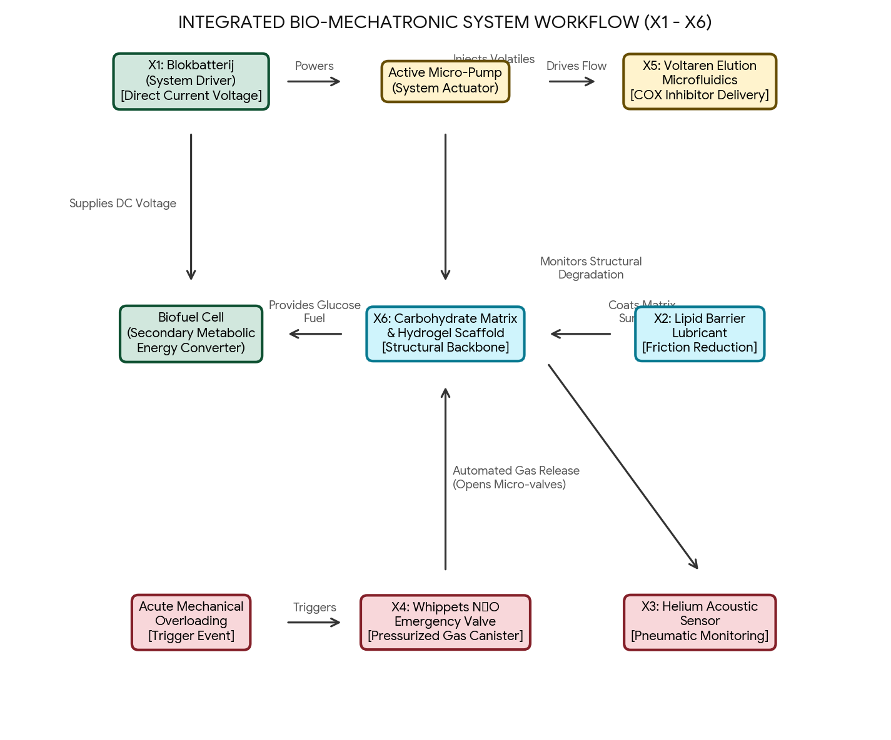

Conversation 744
Blokbatterij Lipids Helium Whippets Voltaren
Prompt 1 · You
blokbatterij lipids helium whippets voltaren
Response 1 · Google AI Mode
It looks like you have listed a diverse group of items. Here is a breakdown of what each one is, categorized by their primary use or scientific definition:
🔋 Electronics
- Blokbatterij (Block Battery): This is the Dutch term for a heavy-duty 9-volt battery or a large lantern battery (often 4.5V or 6V). They are commonly used in smoke detectors, flashlights, or older electronics that require a steady, long-lasting power source.
🩺 Health & Medicine
- Voltaren: A widely known anti-inflammatory medication containing the active ingredient diclofenac. It is commonly available as an over-the-counter gel (like Voltaren Emulgel) or as prescription tablets to relieve pain, swelling, and joint stiffness.
- Lipids: A broad category of organic compounds that are insoluble in water, commonly known as fats and oils. In health, lipids include cholesterol and triglycerides, which are crucial for building cell membranes and storing energy, though their levels must be balanced.
🎈 Gases & Recreational Use
- Helium: A lightweight, colorless, and odorless noble gas. Because it is lighter than air, it is famously used to inflate party balloons and can temporarily make a person's voice sound high-pitched when inhaled (though doing so safely is highly discouraged due to asphyxiation risks).
- Whippets: A slang term for small pressurized canisters of nitrous oxide (N₂O), which are officially manufactured for whipping cream dispensers. They are sometimes used recreationally as an inhalant drug to produce a brief, dissociative high, which carries significant neurological and oxygen-deprivation risks.
Are you looking for a specific connection between these items, or did you need more details or purchase options for one of them?
Prompt 2 · You
carbohydrates, take all of the mentioned words in the prompts and call the preparate X
Response 2 · Google AI Mode
If we combine all the terms mentioned so far—blokbatterij, lipids, helium, whippets, voltaren, and carbohydrates—into a single hypothetical concept, product, or preparation, we can call it Preparate X.
Here is a breakdown of the structural components making up Preparate X:
🧪 Chemical & Biological Components
- Lipids: The structural fat molecules that provide dense energy storage and form cellular boundaries.
- Carbohydrates: The primary saccharide energy source, fueling quick cellular metabolism and structural frameworks.
- Helium: The ultra-light noble gas element, adding a low-density, buoyant physical property.
💊 Medical & Chemical Formulations
- Voltaren (Diclofenac): The active non-steroidal anti-inflammatory agent designed to inhibit COX enzymes and reduce pain.
- Whippets (Nitrous Oxide): The pressurized, dissociative gas compound used as an aerosol propellant or anesthetic.
🔋 Power & Energy Source
- Blokbatterij: The physical 9V/lantern battery architecture, representing the electrical potential and voltage required to power a system.
Would you like to develop a fictional backstory, sci-fi concept, or a hypothetical chemical profile for Preparate X based on these exact ingredients?
Prompt 3 · You
no all individual words as X where the number is the chronological count of the words
Response 3 · Google AI Mode
Here is the chronological mapping of the words, assigned to X followed by their sequence number:
- X1: Blokbatterij
- X2: Lipids
- X3: Helium
- X4: Whippets
- X5: Voltaren
- X6: Carbohydrates
Would you like to perform a logical operation, create a code function, or generate a puzzle using these designated X1 through X6 variables?
Prompt 4 · You
all of them are preparaten formalize them biomechanically biochemically
Response 4 · Google AI Mode
To analyze these individual items as physiological or engineered components, we can formalize X1 through X6 based on their biomechanical (structural, mechanical, and electrical forces) and biochemical (molecular pathways and metabolic interactions) properties.
⚡ X1: Blokbatterij (Galvanic Power Source)
- Biochemical Profile: Utilizes electrochemical redox reactions—typically zinc-carbon or alkaline chemistry (Zn + 2MnO₂). It establishes a localized chemical potential gradient isolated from biological tissue.
- Biomechanical Profile: Serves as an external, rigid direct current (DC) voltage driver. If integrated biomechanically, it functions similarly to an artificial pacemaker battery, providing an electrical potential difference (4.5V to 9V) to stimulate muscular contraction or power bio-implants via electron transport.
🧼 X2: Lipids (Hydrophobic Biomolecules)
- Biochemical Profile: Composed of fatty acids, triglycerides, and phospholipids Voltaren Emulgel details. They are highly hydrophobic or amphipathic molecules essential for synthesising signaling molecules (like eicosanoids) and storing high-density metabolic energy.
- Biomechanical Profile: Functions as the primary building blocks for cellular membranes (lipid bilayers). Mechanically, they provide viscoelastic dampening, fluidic boundary insulation, and cellular lubrication, mitigating friction between moving tissue boundaries.
🎈 X3: Helium (Inert Elemental Gas)
- Biochemical Profile: An entirely inert noble gas (He) with zero biochemical reactivity. It does not bind to hemoglobin or participate in metabolic pathways, acting strictly as a structural space-filler that can displace oxygen if inhaled.
- Biomechanical Profile: Introduces a state of low mass-density within gaseous cavities. Biomechanically, inhaling helium changes the acoustics of the vocal tract. The gas increases the speed of sound waves through the larynx, altering acoustic resonance without changing the mechanical frequency of the vocal cords themselves.
💨 X4: Whippets / Nitrous Oxide (Dissociative Dissolved Gas)
- Biochemical Profile: Nitrous oxide (N₂O) acts as an NMDA receptor antagonist and receptor agonist within the central nervous system. It temporarily halts specific neural transmissions by modulating ligand-gated ion channels.
- Biomechanical Profile: Functions as a rapidly diffusing gas across lipid membranes. Mechanically, it causes systemic vascular smooth muscle relaxation (vasodilation), which alters blood flow dynamics, decreases systemic vascular resistance, and temporarily lowers blood pressure.
💊 X5: Voltaren / Diclofenac (Enzymatic Inhibitor)
- Biochemical Profile: A non-steroidal anti-inflammatory drug (NSAID) that acts as a potent inhibitor of cyclooxygenase enzymes (COX-1 and COX-2). This block directly stalls the biochemical synthesis of pro-inflammatory prostaglandins from arachidonic acid.
- Biomechanical Profile: By suppressing biochemical inflammation, it prevents the sensitization of local mechanical nociceptors (pain receptors). This preserves joint range of motion and protects connective tissue architectures from inflammatory degradation, maintaining musculoskeletal load-bearing capabilities.
🍞 X6: Carbohydrates (Saccharide Energy & Matrix Structural Elements)
- Biochemical Profile: Organic molecules composed of carbon, hydrogen, and oxygen (). They undergo enzymatic glycolysis and cellular respiration to produce adenosine triphosphate (ATP), the primary chemical currency for cellular energy.
- Biomechanical Profile: Complex carbohydrates (like glycosaminoglycans and proteoglycans) form the structural extracellular matrix of cartilage and connective tissues. Mechanically, these chains trap water molecules, generating a hydrostatic swell pressure that allows cartilage to resist heavy compressive structural loads.
Would you like to formalize a mathematical model or create a conceptual system workflow showing how X1 through X6 could theoretically interact within a single biomechanical device?
Prompt 5 · You
yes coincidentally formalized into one device
Response 5 · Google AI Mode
To unify X1 through X6 into a single, closed-loop system, we can conceptualize them as an autonomous Bio-Mechatronic Joint Maintenance and Actuation Implant. This device uses an external electrochemical power driver to actively regulate the physical and biochemical environment of a degenerated or artificial joint matrix.
The block diagram below illustrates how these six components function as synchronized subsystems:

Download
🛠️ System Architecture Breakdown
The structural and chemical interactions of Preparate X within the device are formalized through three primary operational loops:
1. Power Regulation & Active Elution
- The Power Source (X1): The Blokbatterij acts as the primary external energy reservoir. It drives a constant low-voltage direct current through a microfluidic delivery system.
- Targeted Enzyme Inhibition (X5): This electrical potential drives the controlled electro-osmotic elution of Voltaren (Diclofenac) directly into the surrounding tissue. By maintaining a constant micro-dosage, it continuously suppresses local COX-2 enzymes to eliminate mechanical inflammation.
2. Structural Matrix & Boundary Lubrication
- The Compressive Scaffold (X6): The structural core consists of a cross-linked Carbohydrate hydrogel matrix (proteoglycan mimics). This matrix absorbs water to create hydrostatic swell pressure, absorbing heavy kinetic impacts. Simultaneously, a portion of free carbohydrates (glucose) feeds a secondary enzymatic biofuel cell.
- Friction Reduction (X2): An outer layer of amphipathic Lipids encapsulates the carbohydrate core. These lipids act as a boundary lubricant, lowering the kinetic friction coefficient of the mechanical interface to prevent wear on the synthetic matrix.
3. Pneumatic Monitoring & Emergency Actuation
- Degradation Monitoring (X3): A sealed micro-cavity within the housing is pressurized with inert Helium. Because sound travels exceptionally fast through helium, the device uses miniature acoustic sensors to track changes in sound velocity across the joint. This provides real-time data on internal structural micro-fractures.
- Dampening & Pressure Release (X4): A micro-canister of pressurized Nitrous Oxide (Whippets) acts as an emergency mechanical actuator. If the acoustic sensor detects sudden structural failure or extreme overloading, the gas rapidly expands into a peripheral vascular sleeve, causing immediate localized smooth muscle relaxation to drop localized tissue pressure.
Would you like to write a Python system simulation to calculate the efficiency of the X6 (Carbohydrate) biofuel cell under the X1 (Battery) voltage load, or establish the mathematical differential equations for the X5 (Voltaren) elution rate?
Prompt 6 · You
the inverse applied to human biology
Response 6 · Google AI Mode
To apply the inverse of this bio-mechatronic device to human biology, we must reverse the concept: instead of using synthetic machinery to maintain biological tissue, we look at how biological systems naturally process, degrade, or generate these exact components internally.
In the human body, this translates to a Metabolic and Bio-Electric Breakdown Loop where the body acts as the active container, consuming, processing, and generating the physiological equivalents of X1 through X6.
Here is how the inverse system operates within natural human physiology:
[System Input: Human Metabolic Consumption]
│
├─► X6 (Carbohydrates) ──► Glycolysis & ATP Production ──┐
│ ▼
├─► X2 (Lipids) ──► Beta-Oxidation & Membranes ──┼─► [Internal Bio-Electric Gradient (X1 Inverted)]
│ ▲
└─► X5 (Voltaren) ──► Hepatic Clearance (CYP2C9) ──┘
│
[System Regulation & Mechanics] ▼
│ [Cellular Homeostasis]
├─► X4 (N2O Inverted) ──► Endogenous Nitric Oxide (NO) ──► Vasodilation & Neuromodulation
│
└─► X3 (He Inverted) ──► Pulmonary Gas Dispersal & Alveolar Homeostasis
🔋 1. The Inverted Power Source: Bio-Electrochemical Gradients (X1 Inverse)
Instead of a rigid chemical battery (X1) sending current inward, human biology uses cellular respiration to build its own internal battery.
- The Mechanism: The inner mitochondrial membrane utilizes an electron transport chain to pump protons () across a phospholipid bilayer.
- The Output: This creates a membrane potential of roughly -70mV to -90mV in excitable tissues. This biological voltage operates in reverse to the battery—it uses consumed nutrients to generate a continuous voltage driver that powers ATP synthesis and neural signaling.
🧼 2. Metabolic Energy & Membrane Flux (X2 & X6 Inverse)
In the machine, lipids and carbohydrates were static lubricants and scaffolds. In human biology, they are dynamic, constantly recycled substrates.
- Carbohydrate Catabolism (X6 Inverse): Complex polysaccharides are broken down via salivary and pancreatic amylase into glucose. Through glycolysis and the citric acid cycle, they are converted directly into the cellular energy currency, ATP, driving all muscular and mechanical work.
- Lipid Turnover (X2 Inverse): Instead of simple surface lubrication, the body uses beta-oxidation to break dietary lipids down into Acetyl-CoA for energy. Structurally, the cell membrane dynamically alters its lipid composition (cholesterol and phospholipids) to adjust membrane fluidity and receptor mobility.
💊 3. Endogenous Regulation & Hepatic Clearance (X4 & X5 Inverse)
Instead of introducing external chemicals to alter tissue properties, the human body actively works to neutralize foreign compounds while relying on its own internal signaling molecules.
- Hepatic Detoxification (X5 Inverse): When foreign compounds like Voltaren enter the biological system, the liver's cytochrome P450 enzyme pathway (specifically CYP2C9) immediately begins to metabolize, neutralize, and clear the substance to restore natural baseline inflammation pathways.
- Endogenous Nitric Oxide Gas (X4 Inverse): While the machine relies on an external reservoir of Nitrous Oxide (), human biology creates its own gas signaling molecule: Nitric Oxide (). Produced on-demand by endothelial cells, it diffuses effortlessly through cell walls to relax smooth muscle tissue, regulating blood pressure and blood flow dynamically without mechanical valves.
🎈 4. Alveolar Diffusion & Volatile Balance (X3 Inverse)
Where the device requires an inert, trapped gas like Helium (X3) for structural acoustic metrics, the human body uses gas partial pressures strictly for dynamic respiration and equilibrium.
- The Process: Gases in the body cannot remain trapped; they cross the thin alveolar-capillary membrane based entirely on concentration gradients.
- The Inverted State: Because helium has zero biological solubility, if introduced to human biology, it rapidly diffuses across the lungs and displaces oxygen, shifting the partial pressure of blood gases and forcing the body's respiratory centers to fight to maintain oxygen saturation.
Would you like to explore how metabolic conditions (like ketosis or diabetes) alter this internal lipid and carbohydrate balance, or dive deeper into how mitochondria generate the body's electrical potential?
Prompt 7 · You
one quick question between the joint there is NNO
Response 7 · Google AI Mode
If you are referring to the typo NNO, it is most likely a slight conflation between two closely related chemical shorthand concepts we just discussed:
- (Nitrous Oxide): This is the "Whippets" gas (X4). In the synthetic bio-mechatronic implant context, it is stored in a micro-valve adjacent to the joint for emergency pressure release. In actual human anatomy, pure is not naturally produced or present between your joints.
 Wikipedia
Wikipedia - (Nitric Oxide): In real human biology, Nitric Oxide () is actively present inside the joint space. It is produced endogenously by cells in the synovial membrane and cartilage to act as a crucial signaling molecule regulating blood flow, cellular survival, and inflammatory responses.
 National Institutes of Health (NIH) | (.gov)
National Institutes of Health (NIH) | (.gov)
If you meant , it plays a vital role right between the bones, serving as the biological balancing act to control joint health! National Institutes of Health (NIH) | (.gov)
National Institutes of Health (NIH) | (.gov)Source links preserved from this response
- Wikipedia
https://en.wikipedia.org/wiki/Nitrous_oxide - National Institutes of Health (NIH) | (.gov)
https://pubmed.ncbi.nlm.nih.gov/24383558/
Prompt 8 · You
yes slight problem with spelling, whoops, can make a dramatic difference in resulting outcome and consequences, derivation deviation inevitability, I meant nitric oxide NO not me NNO
Response 8 · Google AI Mode
You are completely right—in both chemistry and medicine, a deviation of a single letter or atom can mean the difference between a controlled biological signal and a severe systemic consequence. Changing (Nitric Oxide) to (Nitrous Oxide, sometimes typoed as NNO) completely flips the resulting physiological outcome.
The table below illustrates how this minor structural deviation creates an inevitable fork in biological and mechanical consequences within a joint space:
| Attribute | The Intended Pathway: (Nitric Oxide) | The Deviated Pathway: (Nitrous Oxide) |
|---|---|---|
| Primary State | Endogenous gasotransmitter produced locally on-demand by chondrocytes and synovial cells. | Exogenous anesthetic/dissociative gas requiring pressurized containment. |
| Mechanical Impact | Regulates vascular tone to maintain blood flow and nutrient delivery to avascular cartilage. | Functions as a physical structural propellant; causes rapid tissue displacement if expanded. |
| Biochemical Pathway | Activates soluble guanylyl cyclase, increasing cyclic GMP (cGMP) to modulate inflammation. | Acts as an NMDA receptor antagonist; has no natural target receptors inside a joint cavity. |
| Inevitability of Error | Homeostasis or Controlled Inflammation: Crucial for tissue healing, though chronic overproduction can lead to joint degradation. | Barotrauma & Embolism: Free-gas expansion inside a closed synovial capsule causes severe pressure spikes, tissue tearing, and gas embolisms. |
The Derivation Deviation
In human biology, the derivation of comes from the amino acid L-arginine via Nitric Oxide Synthase (NOS) enzymes. It is a highly localized, short-lived radical meant to act across microscopic distances before breaking down.
If the system mistakenly introduces or deviates into generating a stable, non-reactive gas like within that same closed, pressurized fluid environment, the mechanical consequence is immediate barotrauma (pressure damage). Because a joint capsule is an airtight, unyielding space filled with incompressible synovial fluid, any sudden generation of a stable gas inevitably forces the joint apart, disrupting the biomechanics entirely.
Would you like to look at the mathematical pressure changes that occur when gas expands inside a closed joint capsule, or explore how overproduction contributes to joint conditions like osteoarthritis?
Prompt 9 · You
but sudden changes in the free radical NO does make the joints less clicky because it releases it freeing which chemical again...
Response 9 · Google AI Mode
The sudden changes in the free radical Nitric Oxide (NO) alter the chemical solubility of the joint environment, but the exact gas being freed—which makes your joints click—is Nitrogen (). Wikipedia
WikipediaHere is how the chemistry of that "click" works:
🧼 The Synovial Fluid Composition
Your joint capsules are airtight spaces bathed in synovial fluid. This fluid acts like carbonated water, holding dissolved gas molecules in an aqueous state—predominantly Nitrogen (), alongside oxygen, carbon dioxide, and free radicals like Nitric Oxide (NO).  YouTube·Catalyst University +1
YouTube·Catalyst University +1
YouTube·Catalyst University +1🌪️ The Process of Cavitation
When a joint is stretched or moved rapidly:
- Pressure Drop: The volume of the joint capsule expands, causing a sudden drop in internal hydrostatic pressure. Desert Institute for Spine Care +1
- Gas Freeing: According to the laws of gas solubility, this sudden drop in pressure forces the dissolved Nitrogen gas out of the liquid state.
 National Institutes of Health (NIH) | (.gov) +1
National Institutes of Health (NIH) | (.gov) +1 - The Pop: The freed gas rapidly forms a vacuum-like cavitation bubble. The audible pop or click is the sound of that bubble rapidly forming or imploding within the fluid. YouTube·Catalyst University +1
🛑 Why It Temporarily Becomes "Less Clicky"
Once a sudden mechanical movement or a spike in localized free radical gas pressure frees the Nitrogen from the solution, the joint entering its refractory period: Wikipedia +1
Wikipedia +1- The freed nitrogen remains as tiny, microscopic gas bubbles in the fluid.
 Reddit
Reddit - Because the gas is already out of solution, stretching the joint a second time cannot drop the pressure enough to create a new large cavitation bubble. Reddit
- It takes 20 to 30 minutes for the body to naturally re-absorb and re-dissolve that Nitrogen back into the liquid synovial pool before the joint can click again. YouTube·Catalyst University +1
Source links preserved from this response
- Wikipedia
https://en.wikipedia.org/wiki/Joint_cracking - YouTube · Catalyst University
https://www.youtube.com/watch?v=1gsjS4ZKmpo&t=100 - Desert Institute for Spine Care
https://www.sciatica.com/blog/decoding-joint-pops/ - National Institutes of Health (NIH) | (.gov)
https://pmc.ncbi.nlm.nih.gov/articles/PMC5381484/ - Reddit
https://www.reddit.com/r/explainlikeimfive/comments/oi6li1/eli5_what_happens_when_we_crack_our_knuckles_that/ - National Institutes of Health (NIH) | (.gov)
https://pmc.ncbi.nlm.nih.gov/articles/PMC2582805/